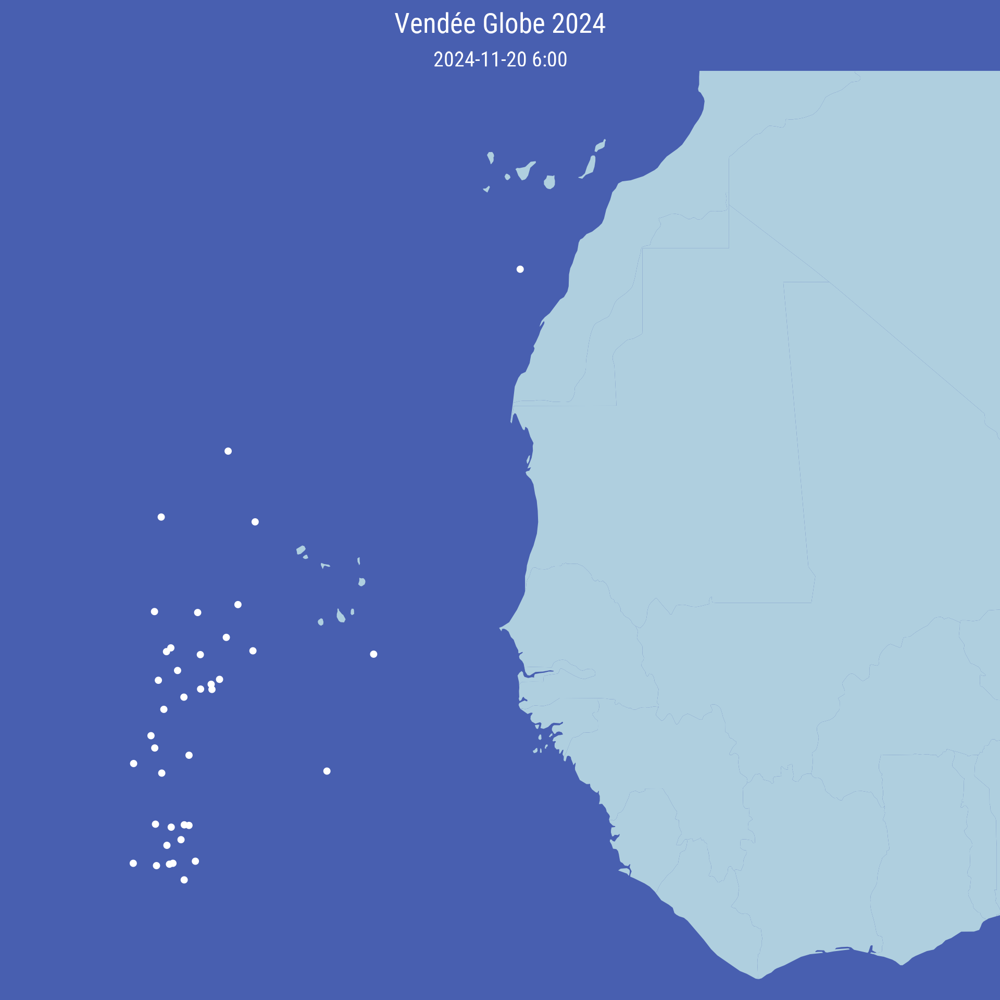

library(tidyverse)
library(readxl)
library(showtext)
library(parzer)Introduction
The Vendée Globe 2024 is well under way!
I wanted to see if I could try a map of the skippers with R.
Follow this tutorial if you’d like to try it for yourself!
Getting the data
The skipper’s standings and coordinates (among other data) are updated every four hours on the race’s website.
You can download the datasets here.
I cleaned the different datasets and created a “global” dataset, which can be downloaded here.
We start our script by loading the packages we’ll be using:
{tidyverse} to clean the data and create the plots
{readxl} to import the Excel sheets containing the data
{showtext} to change the fonts used
{parzer} to convert coordinates
If you don’t have these packages installed, simply use the install.packages() function.
We also load the fonts we will use in the plots: Roboto Condensed.
# Import the fonts
font_add_google("Roboto Condensed", "Roboto Condensed")
showtext_auto()We can now import the clean dataset :
# Download the dataset
df <- readr::read_csv("clean_data.csv")For a quick overview of the data, we use the glimpse() function from the {dplyr} package:
# Explore the dataset
glimpse(df)Rows: 2,160
Columns: 24
$ Date <dbl> 20241110, 20241110, 20241110, 20241110, 20…
$ Time <chr> "130400", "130400", "130400", "130400", "1…
$ Rank <chr> "1", "2", "3", "4", "5", "6", "7", "8", "9…
$ Nat <chr> "FRA", "GBR", "FRA", "FRA", "FRA", "FRA", …
$ Sail <chr> "FRA 2030", "FRA 100", "FRA 172", "FRA 56"…
$ Surname <chr> "Meilhat", "Goodchild", "Duc", "Amedeo", "…
$ Name <chr> "Paul", "Sam", "Louis", "Fabrice", "Maxime…
$ Hour_FR <chr> "14:02 FR\r\n", "14:02 FR\r\n", "14:02 FR\…
$ Latitude <chr> "46°25.94'N", "46°26.02'N", "46°26.01'N", …
$ Longitude <chr> "01°50.17'W", "01°50.14'W", "01°50.01'W", …
$ Last30min_heading <chr> "297°", "270°", "291°", "277°", "240°", "2…
$ Last30min_speed <chr> "0.9 kts", "0.8 kts", "0.6 kts", "0.6 kts"…
$ Last30min_VMG <chr> "0.5 kts", "0.7 kts", "0.4 kts", "0.5 kts"…
$ Last30min_distance <chr> "0.0 nm", "0.0 nm", "0.0 nm", "0.0 nm", "0…
$ SinceLastStandings_heading <chr> "297°", "270°", "291°", "280°", "240°", "2…
$ SinceLastStandings_speed <chr> "0.9 kts", "0.8 kts", "0.6 kts", "0.7 kts"…
$ SinceLastStandings_VMG <chr> "0.5 kts", "0.7 kts", "0.4 kts", "0.5 kts"…
$ SinceLastStandings_distance <chr> "0.0 nm", "0.0 nm", "0.0 nm", "0.1 nm", "0…
$ Last24hrs_heading <chr> "205°", "205°", "204°", "204°", "204°", "2…
$ Last24hrs_speed <chr> "0.2 kts", "0.2 kts", "0.2 kts", "0.2 kts"…
$ Last24hrs_VMG <chr> "0.2 kts", "0.2 kts", "0.2 kts", "0.1 kts"…
$ Last24hrs_distance <chr> "4.6 nm", "4.6 nm", "4.5 nm", "4.5 nm", "4…
$ Distance_to_finish <chr> "24272.3 nm", "24272.4 nm", "24272.5 nm", …
$ Distance_to_leader <chr> "0.0 nm", "0.1 nm", "0.1 nm", "0.2 nm", "0…Cleaning the data
We use the following code to parse the coordinates:
df <- df |>
mutate(lon = parzer::parse_lon(Longitude),
lat = parzer::parse_lat(Latitude))Creating the map
World map
First we get the data for the world map:
world <- map_data("world")Skippers
We then create a simple map with the latest standings:
ggplot() +
geom_polygon(data = world, aes(x = long, y = lat, group = group),
fill = "#afcfdf") +
geom_point(data = filter(df, Date == 20241120, Time == "060000"),
aes(x = lon, y = lat),
col = "white", size = 0.8) +
coord_fixed(ratio = 1.3, xlim = c(-35, 0), ylim = c(5, 30)) +
labs(title = "Vendée Globe 2024",
subtitle = "2024-11-20 6:00") +
theme_void() +
theme(panel.background = element_rect(colour = "#485fb0",
fill = "#485fb0"),
plot.background = element_rect(colour = "#485fb0",
fill = "#485fb0"),
# plot.margin = margin(t = -50, r = -150),
plot.title = element_text(colour = "white",
family = "Roboto Condensed",
size = 20, hjust = 0.5),
plot.subtitle = element_text(colour = "white",
family = "Roboto Condensed",
size = 15, hjust = 0.5))Save map
We now save the map :
ggsave("20241120_060000.png", p, dpi = 320, width = 6, height = 6)And here’s the result:
